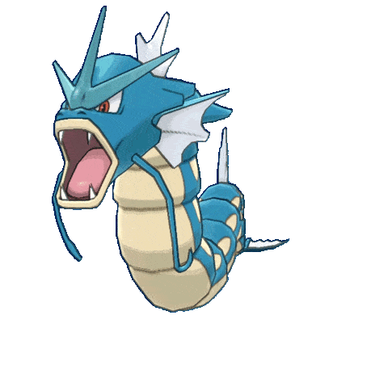

Gyarados
TIPO

Gyarados es un Pokémon de tipo Agua/Volador introducido en la primera generación de juegos de Pokémon. Es la evolución de Magikarp, y es famoso por su aspecto imponente y su fuerza devastadora en combate.
Ir a Menu principal